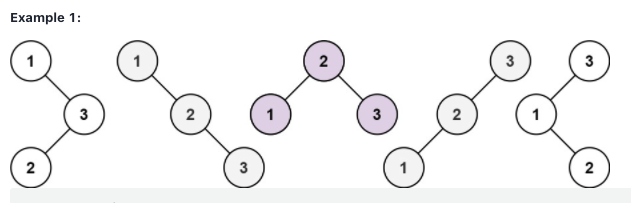

算法本质
动态规划（Dynamic Programming),简称dp问题，dp中的每一个状态由上一个状态推导出来
构建步骤
- 确定dp table及其下标的含义
- 确定递推公式
- dp数组初始化
- 确定遍历顺序
- 举例推导dp数组
debug方法
- 打印tb table
- 模拟dp table中的状态转移
leetcode相关题目
509.斐波那契数
题目链接：https://leetcode-cn.com/problems/fibonacci-number/
- 本题主要用于熟悉dp
- 然而我的做法不是基于dp思路推导，选择了今天算法课上老师说的速度较快，内存占用较小的方法（避免了递归，重复计算）
1
2
3
4
5
6
7
8
9
10class Solution:
def fib(self, n: int) -> int:
num = []
num.append(0)
num.append(1)
for i in range(n):
temp = num[1]
num[1] = num[0] + num[1]
num[0] = temp
return num[0]
70.爬楼梯（climbing stairs）
题目链接：https://leetcode-cn.com/problems/climbing-stairs/
- dp[i]：爬到第i层楼的方法数
- 由于本题中一次只能跨1或2个台阶，所以dp[i] = dp[i-1] + dp[i-2]
- dp[0]的初始化，本题其实无需讨论，但要做到心里有数
- 延伸到一步跨不同台阶数到做法
1
2
3
4
5
6
7
8
9class Solution:
def climbStairs(self, n: int) -> int:
dp = [0] * (n+1)
dp[0] = 1
for i in range(n+1):
for j in range(1,3):
if i >= j:
dp[i] += dp[i-j] # j的范围可改 适应不同的跨过台阶数
return dp[-1]
746.使用最小花费爬楼梯（min cost climbing stairs)
题目链接：
- dp[i]:爬到第i层的最小花费
- dp的递推公式其实有两种，每种都考虑到了，但对于不同的递推公式，有不同的初始化
- dp[i] = min(dp[i-1],dp[i-2]) + cost[i] 或 dp[i] = min(dp[i-1]+cost[i-i], dp[i-2]+cost[i-2])
我的版本：1
2
3
4
5
6
7
8class Solution:
def minCostClimbingStairs(self, cost: List[int]) -> int:
dp = [0] * (len(cost)+1)
if len(cost) == 2:
return min(cost)
for i in range(2, len(cost)+1):
dp[i] = min(dp[i-1]+cost[i-1], dp[i-2]+cost[i-2])
return dp[-1]
题解版本：
1 | class Solution: |
62.不同路径（unique paths)
题目链接：https://leetcode-cn.com/problems/unique-paths/
- 题目结合高中数学的知识可推导出dp的递推公式
- dp[i][j] = dp[i-1][j] + dp[i][j-1] 因为只能向右走或者向下走
- 所以就引出dp数组的初始化问题，我采用了遍历过程中初始化的方法，也可以直接全部初始化为1，修改遍历的起始点
我的版本：1
2
3
4
5
6
7
8
9
10class Solution:
def uniquePaths(self, m: int, n: int) -> int:
dp = [[0] * n] * m
for i in range(0, m):
for j in range(0, n):
if i != 0 and j != 0:
dp[i][j] = dp[i-1][j] + dp[i][j-1]
else:
dp[i][j] = 1
return dp[-1][-1]
63.不同路径II
题目链接：https://leetcode-cn.com/problems/unique-paths-ii/submissions/
- 在62的基础上，多增设了障碍
- 思考过程其实与62相似，dp递推公式类似，而遇到障碍的时候，该维度的dp数组就置0，意味着没有别的通路能够通往此处/或者从此处走出
- 判断条件要加上，第一格，第一行，第一列的区别
我的版本：1
2
3
4
5
6
7
8
9
10
11
12
13
14
15
16
17
18
19
20
21
22
23
24
25
26
27
28class Solution:
def uniquePathsWithObstacles(self, obstacleGrid: List[List[int]]) -> int:
m = len(obstacleGrid)
n = len(obstacleGrid[0])
dp = [[0]*n]*m # 构造dp table
for i in range(m):
for j in range(n):
if i != 0 and j != 0:
if obstacleGrid[i][j] != 1:
dp[i][j] = dp[i-1][j] + dp[i][j-1]
else:
dp[i][j] = 0
elif i == 0 and j != 0: # 第一行
if obstacleGrid[i][j]!= 1:
dp[i][j] = dp[i][j-1]
else:
dp[i][j] = 0
elif j == 0 and i != 0: # 第一列
if obstacleGrid[i][j]!= 1:
dp[i][j] = dp[i-1][j]
else:
dp[i][j] = 0
else: # 第一格的情况
if obstacleGrid[i][j]!= 1:
dp[i][j] = 1
else:
dp[i][j] = 0
return dp[-1][-1]
343.整数拆分
题目链接：https://leetcode-cn.com/problems/integer-break/submissions/
- 本题关键在于如何确定递推公式，将数拆分的过程
- 严格意义上dp[0]和dp[1]无需赋值
- O(n^2)
1
2
3
4
5
6
7
8
9
10
11class Solution:
def integerBreak(self, n: int) -> int:
dp = [0] * (n+1)
dp[2] = 1
for i in range(3, n+1):
for j in range(1, i-1):
# 假设对正整数i拆分出的第一个数为j（此时遍历j）
# 若将i拆封成两部分：i与i-j的乘积，则此时拆分部分乘积为j*(i-j)
# 若继续将（i-j）进行拆分，则此时拆分部分乘积为j*dp[i-j]
dp[i] = max(dp[i], max(j*(i-j), j*dp[i-j])) # 不断迭代最大值
return dp[n]
96.不同的二叉搜索树(unique binary search trees)
题目链接：https://leetcode-cn.com/problems/unique-binary-search-trees/submissions/
- 本题堪称最近最有成就感的一题（大概因为想了很久吧）
- 其实线索可以从leetcode上的图中观察得出，下图中已经用颜色分类，首先可以看出树的形状是对称的，接着观察以1为头节点的下半部分，实际上是当n=2时bst的形状
- 最后结合二叉搜索树左右节点的特点，则可以知道dp的递推公式，由此也可以想到初始化dp[0]=1(理论上也符合)

我的版本：
1 | class Solution: |
416.分割等和子集partition equal subset sum
题目链接：https://leetcode-cn.com/problems/partition-equal-subset-sum/
- 实际上这题没有理解得十分透彻
- 使用了滚动数组，得注意dp的定义以及遍历顺序
1
2
3
4
5
6
7
8
9
10
11class Solution:
def canPartition(self, nums: List[int]) -> bool:
target = sum(nums)
if target % 2 != 0:
return False
target //= 2
dp = [0] * 10001
for i in range(len(nums)):
for j in range(target, nums[i]-1, -1):
dp[j] = max(dp[j], dp[j-nums[i]]+nums[i])
return dp[target] == target
cs336 homework
hw2.1 checker collector
Consider the following single-player game played on a game board with dimensions 4 × n. Each square of the game board has a prize given by a positive real number. You would like to collect prizes to maximize the sum of prizes; however, you have to satisfy the following no two adjacent prizes can be collected. In other words, if you collect the prize at location (i,j), you cannot collect the prize at (i±1,j) or (i,j±1) (assuming those indices exist). For example, if you checkered the game board, then one solution could be to take all the black squares, another solution could be to take all the white squares. You could also take some white squares and some black squares as long as none of are next to each other
Input：
- A 4 × n matrix Q, with prize values qij
Output: The subset S of the entries of qij such that: - if (i,j) in S, then (i±1,j)∉ S and (i,j±1)∉S.
- Σ(i,j)∈S qij is maximized.
1 |
|
5. Longest Palindromic Substring
- 注意遍历顺序， 从下至上，从左至右遍历
- 判断条件
1
2
3
4
5
6
7
8
9
10
11
12
13
14
15
16
17
18
19
20
21
22
23
24
25
26
27
28
29
30
31
32
33
34
35
36
37
38
39
40
41
42
43
44
45
46
47
48
49
50
51
52
53// 动态规划
/**
* @param {string} s
* @return {string}
*/
var longestPalindrome = function(s) {
const strLength = s.length
let maxLenSubstring = "";
let dp = Array.from(Array(strLength), ()=> Array(strLength).fill(false))
for(let i = strLength - 1; i >= 0 ; i--){
for(let j = 0; j < strLength; j++){
if(s[i] === s[j]){
if(j - i <= 1){
dp[i][j] = true
if(j - i + 1 > maxLenSubstring.length){
maxLenSubstring = s.slice(i, j+1)
}
}else if (dp[i + 1][j - 1]){
dp[i][j] = true
if(j - i + 1 > maxLenSubstring.length){
maxLenSubstring = s.slice(i, j+1)
}
}
}
}
}
return maxLenSubstring
};
// 中心扩散法
var longestPalindrome = function(s) {
const strLength = s.length
let maxLenSubstring = ""
for(let i = 0; i < strLength; i++){
result1 = extend(i, i, strLength, maxLenSubstring)
result2 = extend(i, i+1, strLength, maxLenSubstring)
maxLenSubstring = result1.length > result2.length ? result1: result2
}
function extend(left, right, strSize, maxLenString){
let res = maxLenString
while(left >= 0 && right < strSize && s[left] === s[right]){
res = (right - left + 1) > res.length ? s.slice(left, right + 1): res
left --
right ++
}
return res
}
return maxLenSubstring
};
64. Minimum path sum
1 | class Solution: |
- Post title：动态规划
- Post author：HONG HONG
- Create time：2022-01-04 16:22:12
- Post link：https://honghong1012.github.io/2022/01/04/动态规划/
- Copyright Notice：All articles in this blog are licensed under BY-NC-SA unless stating additionally.